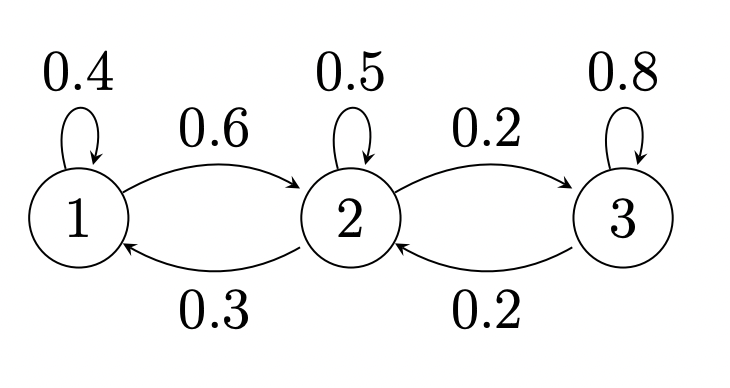

Stationary Distributions
Note: This is not a real problem set from the class. All of these questions are ones that I either wrote myself or found online or from textbooks. I made these to help supplement my learning and get in extra practice.
In this problem set, we start to learn more about Markov chains and their properties. What is of interest here is the convergence of Markov chains to some steady state form, known as its stationary distribution. You can access a pdf of the problem set Here, with the pdf of solutions Here.
Problem 1: Birth-Death Markov Chain
Suppose we have a "birth-death" Markov chain below with three states. We define the transition that results in a higher index as a birth, and a transition that results in a lower index as a death. For example, a transition from state $1$ to state $2$ is a birth, while the transition from state $3$ to state $2$ is a death. Any transition where the states do not change (for example a transition from any state to itself) is neither a birth nor a death.
Calculate each of the following quantities, assuming that when we start observing the chain, it is already in steady-state.
- For each state $i$, the probability that the current state is $i$.
- The probability that the first transition we observe is a birth.
- The probability that the first change of state we observe is a birth.
- The conditional probability that the process was in state $2$ before the first transition that we observe, given that this transition was a birth.
- The conditional probability that the process was in state $2$ before the first change of state that we observe, given that this change of state was a birth.
- The conditional probability that the first observed transition is a birth given that it resulted in a change of state.
- The conditional probability that the first observed transition leads to state $2$, given that it resulted in a change of state.
Note: A transition doesn't necessarily result in a change in state.
Solution
- Under construction
$\color{white}.\color{black}$
Problem 2: Morning Run
Every morning I go outside for my morning run. When I leave the house for my run, I am equally likely to go out either the front door or the back door; and similarly, when I return, I am equally likely enter my house through the front door or the back door. I also own five pairs of running shoes which I take off immediately after my run and leave them at whichever door I happen to enter through. If there are no shoes at the door from which I leave to go running, I run barefooted.
- Draw a Markov chain of this scenario, indicating each state and the transition probabilities.
- Determine the proportion of time in the long run that I spend running barefooted.
Solution
- Under construction.
$\color{white}.\color{black}$
Problem 3: Bank Queue
Suppose that someone arrives at a bank at time $n$ with probability $\alpha$. They wait in a queue (if any) which is served by one bank clerk in a first-come-first-serve fashion. When at the front of the queue, the person requires a service which is distributed like a random variable $\mathcal{S}$ with values in $\mathbb{N}:\mathbb{P}(\mathcal{S}=k)=p_k$ for $k=1,2,\dots$ Different people require services which are independent random variables. Consider the quantity $W_n$ which is the total waiting time at time $n$. In other words, if I observe the queue at time $n$, then $W_n$ represents the time I have to wait in line until I finish my service. It can be shown (you don't have to prove this) that $W_n$ obeys the recursion:
$$W_{n+1}=\left(W_n+\mathcal{S}_n\xi-1\right)^{+},$$where the $\mathcal{S}_n$ are i.i.d random variables distributed like $\mathcal{S}$, independent of the $\xi_n$. The $\xi_n$ are also i.i.d with $\mathbb{P}(\xi_n=1)=\alpha$, and $\mathbb{P}(\xi_n=0)=1-\alpha$. Thus, $\xi_n=1$ indicates that there is an arrival at time $n$.
- Show that $\left(W_n:n\geq 0\right)$ is a Markov chain and compute its transition probabilities $p(k,\ell)$, for $k,\ell=0,1,2\dots$ in terms of parameters $\alpha$ and $p_k$.
- Suppose that $p_1=1-\beta$ and $p_2=\beta$. Find conditions on $\alpha$ and $\beta$ so that the stationary distribution exists.
- Give an interpretation of you condition in part (b) in context to this queuing scenario.
- Find the stationary distribution.
- Find the average waiting time in steady-state.
- If $4$ customers arrive every $5$ units of time on average, what is the maximum value of $\beta$ so that a stationary distribution exists?
Solution
- Under construction.